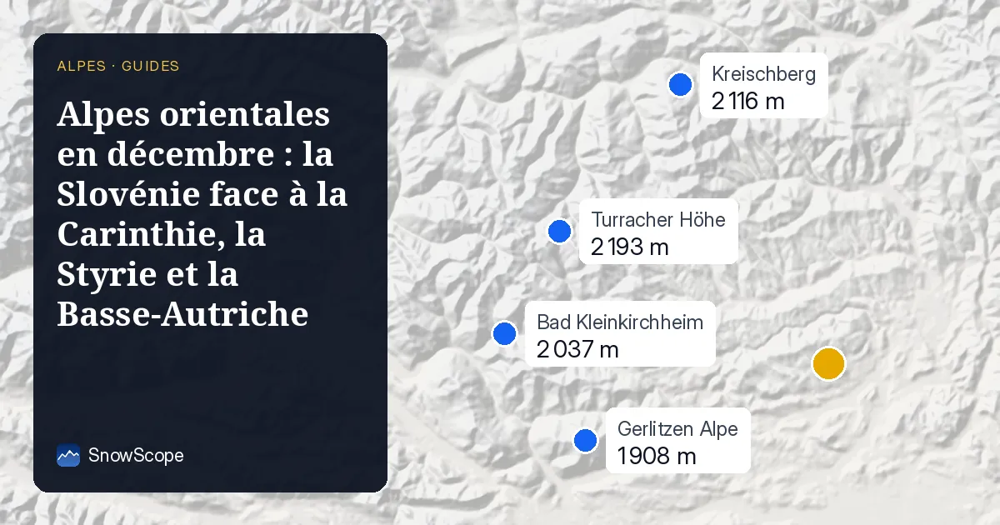

Alpes orientales en décembre : la Slovénie face à la Carinthie, la Styrie et la Basse-Autriche
Plus on va vers l'est des Alpes, plus les prix baissent, et la neige de décembre aussi. La Slovénie a les forfaits les moins chers de ce comparatif, dès 45 EUR la journée, mais à Krvavec, Vogel, Rogla et Mariborsko Pohorje, au plus 24 % de nos hivers avaient 30 cm à mi-pente la semaine du 15 au 21 décembre. Le côté autrichien coûte plus et donne plus.
Consultez les prévisions neige en temps réel pour Eastern Alps in December sur l'application SnowScopeHauteurs de neige, alertes poudreuse et carte 3D, gratuitement.
La réponse courte
S'il vous faut de la neige naturelle en décembre, allez dans les domaines autrichiens plus hauts : le Mölltaler Gletscher (8), Lachtal (7) ou le Hochkar (9). Si vous habitez près de Ljubljana ou Maribor et pouvez décider le jour même, les collines slovènes sont une excellente affaire quand leurs propres bulletins de neige sont bons.
Une note sur le périmètre : nous ne comparons que des stations pour lesquelles nous avons 46 hivers d'historique de neige. Les domaines de Tchéquie, Slovaquie, Pologne, Roumanie et Bulgarie ne sont pas encore dans notre historique et ne sont donc pas classés ici.

Slovénie : bon marché, et franche sur la neige
Krvavec (1) est le plus haut des quatre, avec des remontées jusqu'à 1963 m, et le plus fréquenté depuis Ljubljana. La journée coûte 47 EUR et les 6 jours 205 EUR. La mi-pente avait 30 cm mi-décembre dans 24 % de nos hivers, et seulement dans 13 % des semaines de Noël récentes.
Rogla (3) est comparable : 49 EUR la journée (44 EUR en début de saison), 210 à 237 EUR les 6 jours, et 22 % des hivers avec 30 cm à mi-pente mi-décembre. Vogel (2), au-dessus du lac de Bohinj, coûte 49 EUR la journée et 230 EUR les 6 jours ; son sommet avait 30 cm dans 30 % des hivers, son milieu dans 9 %. Mariborsko Pohorje (4), le plus bas, coûte 45 EUR la journée et n'a jamais eu 30 cm à mi-pente cette semaine-là dans nos hivers.
Carinthie : un glacier et deux paris
Le Mölltaler Gletscher (8) est la seule valeur sûre de la région : 128 cm à mi-pente un 15 décembre typique et 30 cm mi-décembre dans chacun de nos hivers. Son forfait 6 jours coûtait 332 EUR en basse saison sur sa dernière grille publiée (2025-26).
Nassfeld (5), à la frontière italienne, est grand (70 km de pistes cartographiées) mais bas en bas : son sommet avait 30 cm mi-décembre dans 63 % des hivers, son milieu dans 22 %. Six jours coûtent 353 EUR en début de saison et 381 EUR ensuite. La Turracher Höhe (6) est proche pour la neige (39 % à mi-pente) et le prix (353 EUR les 6 jours en basse saison).
Styrie et Basse-Autriche : la voie du milieu
Lachtal (7), en Styrie, avait 30 cm à mi-pente mi-décembre dans 72 % des hivers, pour 62 EUR la journée ou 293,50 EUR les 6 jours en période creuse. Le Hochkar (9), en Basse-Autriche, avait 63 %, avec des prix journée dynamiques vus dès 32,90 EUR les jours calmes de décembre.
Les deux ont beaucoup perdu de neige en décembre au fil des ans : considérez-les comme des sorties quand la prévision est bonne, pas comme des réservations figées.
Comment choisir
Semaine fixe avant Noël, sans risque de neige : Mölltaler Gletscher. Long week-end pas cher décidé tard : Lachtal ou le Hochkar. Sorties à la journée depuis les villes slovènes : Krvavec ou Rogla les jours où leurs pistes sont annoncées ouvertes et enneigées. Pour le reste en Slovénie, janvier et février sont les mois les plus sûrs.
Conseils aux skieurs
- En Slovénie, achetez des journées les bons jours plutôt qu'une semaine de décembre à l'avance.
- Pour une semaine de décembre fixe dans la région, le Mölltaler Gletscher est la seule neige presque certaine.
- Consultez la carte de neige quelques jours avant : les collines de l'est changent vite à chaque tempête.
- Lisez le bulletin d'avalanches slovène, carinthien ou styrien avant de quitter la piste.
Références et crédits
- Krvavec: official lift-pass prices (2026-27), checked 13 November 2026 rtc-krvavec.si/cenik-urnik
- Vogel: official lift-pass prices (2026-27), checked 13 November 2026 vogel.si/cenik-zima/
- Rogla: official lift-pass prices (2026-27), checked 13 November 2026 www.rogla.eu/sl/aktualna-ponudba/ceniki/zimske-aktivnosti/cenik-smucarskih-vozovnic-v-sezoni-20262027/
- Mariborsko Pohorje: official lift-pass prices (2026-27), checked 13 November 2026 www.visitpohorje.si/ceniki/smucisce/
- Nassfeld: official lift-pass prices (2026-27), checked 13 November 2026 www.nassfeld.at/en/Winter-World/Sun-Ski-World/Skigebiet-Nassfeld/Skipasspreise/Tages-Mehrtageskarten
- Turracher Höhe: official lift-pass prices (2026-27), checked 13 November 2026 www.turracherhoehe.at/en/winter/tariffs
- Lachtal: official lift-pass prices (2026-27), checked 13 November 2026 www.lachtal.at/en/tickets-prices/day-ski-passes/
- Mölltaler Gletscher: official lift-pass prices (2025-26), checked 13 November 2026 www.moelltaler-gletscher.at/en/price-list/winter/moelltaler-gletscher
- Hochkar: official lift-pass prices (2026-27), checked 13 November 2026 shop.hochkar.com/en/products/skitickets
À propos de ces chiffres
Chiffres de neige : historique SnowScope, 46 hivers passés (1980-81 à 2025-26) aux altitudes de la station, corrigé de l'altitude (une estimation pour une zone, pas les bulletins de la station) ; « bonne neige » = 30 cm ou plus au sol en moyenne sur la semaine. Carte : notre hauteur habituelle au 15 décembre répartie sur le relief selon l'altitude. Pistes et remontées : cartographie OpenSkiMap. Forfaits : grilles officielles des stations, vérifiées le 13 novembre 2026 ; les prix peuvent changer.
Citer ce bulletin
Pour la recherche, l'enseignement ou la presse : chiffres et graphiques réutilisables librement sous CC BY 4.0 avec cette citation.
SnowScope (2026), Alpes orientales en décembre : la Slovénie face à la Carinthie, la Styrie et la Basse-Autriche, https://snowscope.app/blog/fr/2026/11/eastern-alps-december-ski-value-slovenia-carinthia-styria.html, consulté le 2026-11-14
SnowScope (Atlas Labs). (2026, November 14). Alpes orientales en décembre : la Slovénie face à la Carinthie, la Styrie et la Basse-Autriche. SnowScope snow reports. https://snowscope.app/blog/fr/2026/11/eastern-alps-december-ski-value-slovenia-carinthia-styria.html
BibTeX
@misc{snowscope2026easternalpsdecemberskiva,
author = {{SnowScope (Atlas Labs)}},
title = {Alpes orientales en décembre : la Slovénie face à la Carinthie, la Styrie et la Basse-Autriche},
year = {2026},
month = nov,
howpublished = {\url{https://snowscope.app/blog/fr/2026/11/eastern-alps-december-ski-value-slovenia-carinthia-styria.html}},
note = {Published 2026-11-14 17:54 UTC; accessed 2026-11-14}
}· CC BY 4.0 · Méthodes, données et outils →
Suivre Eastern Alps in December
Gratuit : un message quand la neige arrive, et la météo chaque matin.
Autres bulletins neige

Kitzbühel est célèbre et basse. Ce que disent 46 hivers passés de la neige à 762 m, 1 377 m et 1 993 m, ce qui a changé, et quelles semaines sont le pari le plus sûr.

Sept jours dans la Silvretta Arena, un par un : où est la neige, quand passer à Samnaun, et ce que disent 46 hivers passés de la neige d'Ischgl à trois altitudes.